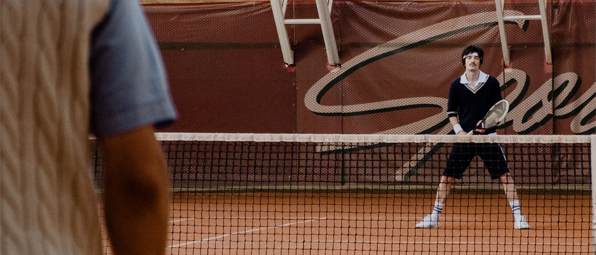

Veelgestelde vragen

Komen wij in aanmerking?
Niet elke vereniging. De regeling geldt voor sport- en muziekverenigingen die lid zijn van een landelijke koepel, en de vereniging moet fiscaal een SBBI zijn. De eerste vraag is dus niet hóé, maar óf. Dat zoeken we vooraf voor jullie uit — voordat we iets beloven.
Is het veilig en legaal?
Ja. De steunstichting SBBI is een wettelijk erkend instrument. Het luistert wel nauw: voorwaarden, termijnen en verantwoording. Daarom toetsen we vooraf of het bij jullie kan, voeren we het zorgvuldig uit en laten we waar nodig de belastingadviseur meekijken. Garanties dat er nóóit iets misgaat geeft niemand; zorgvuldigheid wel.
Kost dit de vereniging iets?
Twee dingen staan los van elkaar. Wat gevers bijdragen, komt volledig ten goede aan jullie investering — daar gaat niets vanaf, en het is vrijgesteld van schenkbelasting. Onze begeleiding is een aparte afspraak; wat die kost, hangt af van de omvang en bespreken we bij de kennismaking.
Blijft het geld van de club?
Het geld dat je inzamelt, is bestemd voor de afgesproken investering en komt de club ten goede. Let op één regel: blijft er ná de besteding geld over, dan gaat dat bij de opheffing van de stichting naar een goed doel met ANBI-status — niet vrij terug in de clubkas. Daarom plannen we het doel en de begroting vooraf zorgvuldig.
Moeten we dit zelf doen, of doen jullie het?
Wij begeleiden van begin tot eind. Je kúnt een stichting zelf oprichten, maar de akte is het makkelijke deel — het echte werk zit in de voorwaarden, de administratie en de nette afronding. Dat nemen we over, zodat jullie je met het lustrum kunnen bezighouden.
Zijn jullie een notaris of accountant?
Nee. Wij begeleiden het hele traject en houden het overzicht. Voor de notariële akte en waar nodig voor fiscaal advies schakelen we de juiste specialisten in. Zo heb je één aanspreekpunt, met de specialisten op de juiste plek.
Wat als we niet genoeg ophalen?
Er is geen verplicht streefbedrag. Je zamelt in wat de gemeenschap kan dragen en stemt het plan daarop af — een investering kan groter of bescheidener. We helpen je vooraf realistisch begroten, zodat er geen gat ontstaat tussen belofte en resultaat.
Levert een gift belastingvoordeel op voor de gever?
Voor sommige gevers wel, voor de meeste nauwelijks. Voor de grotere gever en de ondernemer die vanuit zijn bedrijf geeft, kan een gift aftrekbaar zijn. Voor kleine giften levert de wettelijke drempel in de praktijk weinig op. En belangrijk: de aftrek geldt voor een gift aan de steunstichting, niet aan de vereniging zelf. Dat zeggen we liever eerlijk dan mooier dan het is.
Hoe lang duurt het?
Reken op een boog van drie jaar rond het lustrum. Het jaar ervoor voorbereiden en oprichten, het lustrumjaar werven en realiseren, het jaar erna verantwoorden en afronden.
Wat gebeurt er na het lustrum?
We leggen verantwoording af: een sluitende administratie en een helder verslag, met een dossier voor de vereniging en desgewenst de gemeente. Daarna ontbinden we de stichting netjes, met slotbalans en opheffing. Juist die nette afronding maakt het geloofwaardig richting leden, bonden en gemeente.
Wat kost het?
Dat hangt af van de omvang van de vereniging en de investering. Een indicatie en een concreet voorstel krijg je na de kennismaking. Wat wél vaststaat: de bijdragen van gevers gaan volledig naar het doel; onze begeleiding is een aparte afspraak.
Hoe beginnen we?
Het begint met een kennismaking. Daarin kijken we samen of het bij jullie kan en wat er nodig is — vrijblijvend en zonder verplichtingen.
Staat jullie vraag er niet bij?
Stel hem gerust bij de kennismaking. Die is vrijblijvend en kosteloos.
Plan een kennismaking Lees de uitleg over de steunstichting SBBI